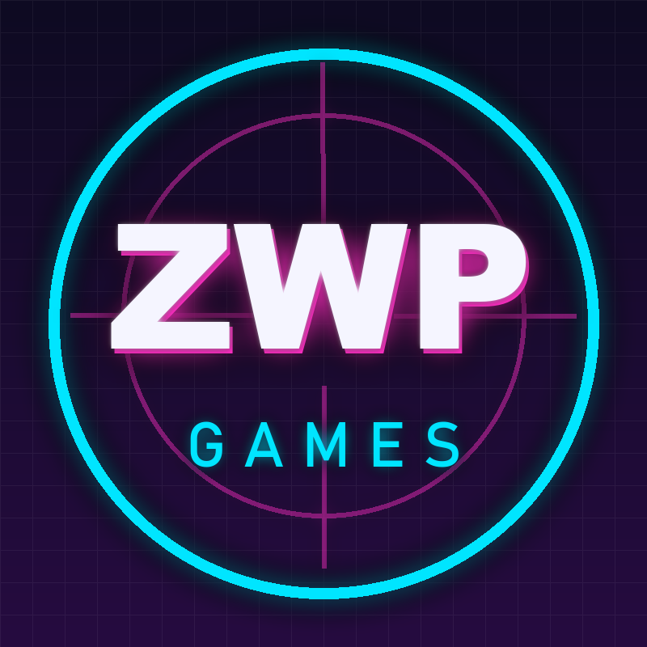

Termos de Uso
Última atualização: 12 de novembro de 2026
O ZWPGAMES Clipes é uma ferramenta de uso pessoal do dono do canal ZWPGAMES para preparar e enviar cortes de lives ao próprio canal. Ela não é oferecida nem vendida ao público.
1. Serviços do YouTube
O aplicativo usa os Serviços de API do YouTube. Quem usa o aplicativo concorda com os Termos de Serviço do YouTube e com a Política de Privacidade do Google.
1.1 Serviços do TikTok
O aplicativo também publica na conta do canal no TikTok usando a API oficial. Quem usa o aplicativo concorda com os Termos de Serviço do TikTok.
2. Conteúdo
Os cortes são publicados com crédito ao criador original e com autorização dele. Se você é criador e quer que um corte seja removido, entre em contato pelo endereço abaixo.
3. Privacidade
Veja a Política de Privacidade.